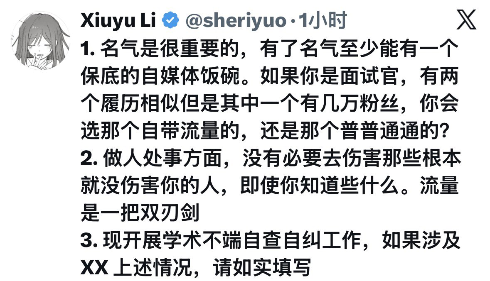

サイバー環状線
@CyberKanjousen
对于 1 ：環状線是面试官的话，肯定选普普通通的那个。除非这个岗位需要自媒体经营能力，或者有名气的那个能力比没名气的强。
招有名气的员工是相当有风险的。一旦员工说了公司的坏话，而且是在公司无法删帖限流的社交平台，对公司的名誉很可能会造成负面影响。没名气的员工就安全得多。
所以现在 很多公司都要求员工报备粉丝数超过一定量的社交媒体账号。国内有的公司还禁止员工拥有海外社交媒体。

Xiuyu Li
@sheriyuo
1. 名气是很重要的，有了名气至少能有一个保底的自媒体饭碗。如果你是面试官，有两个履历相似但是其中一个有几万粉丝，你会选那个自带流量的，还是那个普普通通的？
2. 做人处事方面，没有必要去伤害那些根本就没伤害你的人，即使你知道些什么。流量是一把双刃剑
3. https://t.co/XGUnDpKHnb